What is a rainbow?
A rainbow is a meteorological phenomenon that is caused by reflection, refraction and dispersion of light in water droplets resulting in a spectrum of light appearing in the sky. It takes the form of a multicoloured circular arc. Rainbows caused by sunlight always appear in the section of sky directly opposite the sun.
A rainbow is not located at a specific distance from the observer, but comes from an optical illusion caused by any water droplets viewed from a certain angle relative to a light source. Thus, a rainbow is not an object and cannot be physically approached.
Rainbows span a continuous spectrum of colours. Any distinct bands perceived are an artefact of human colour vision, and no banding of any type is seen in a black-and-white photo of a rainbow, only a smooth gradation of intensity to a maximum, then fading towards the other side. For colours seen by the human eye, the most commonly cited and remembered sequence is Newton's sevenfold red, orange, yellow, green, blue, indigo and violet, remembered by the mnemonic, Richard Of York Gave Battle In Vain (ROYGBIV).
Rainbows can be caused by many forms of airborne water. These include not only rain, but also mist, spray, and airborne dew.
How does a rainbow form?
Sunlight hitting a raindrop in the atmosphere is refracted on the surface of the raindrop and enters the droplet. Once refraction occurs, the light breaks up into seven colors inside the raindrop; it is then reflected to the other side of the raindrop after traveling inside it. When the light in the raindrop refracts, the spectrum forms to make the 7 colors of the rainbow appear. During reflection, the angle (of reflection) is equal to the angle of incidence; this means that reflected light travels along a set path and maintains the difference of the refraction angle. A rainbow is a bunch of raindrops hanging in the atmosphere that divide the sunlight into 7 colors, like a prism.
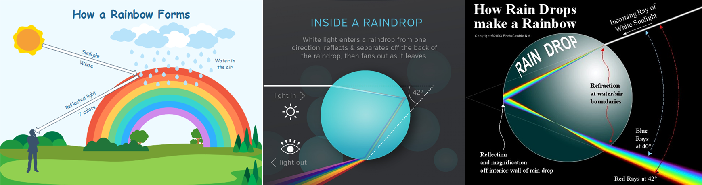
The Formation of Rainbows
The process of rainbow formation is explained in steps for easy and better comprehension below.
- Step 1: The main reason behind the formation of a rainbow, that is the semi-circular band of 7 colors that you see in the sky, is basic physics. Reflection and refraction of light is what causes the formation of the spectrum, which is the breakdown of white light into its basic colors.
- Step 2: In order for a rainbow to be formed, it is necessary for the fundamental components of reflection to be present: light and a reflecting surface. Here, the light is the sun's rays and the reflecting surface is the drops of water.
- Step 3: When light emanates from the sun, it is in its pure form, i.e., white light. When this white light reaches the surface of a water droplet at the appropriate angle, it breaks down into the spectrum of colors. This spectrum reaches the inner most point at the top of the water drop and gets reflected onto the lowermost point in the drop.
- Step 4: This spectrum gets refracted from this lowermost point, gets dispersed, and escapes the water droplet.
- Step 5: This dispersed spectrum of colors is what we see as the rainbow. An interesting tidbit is that within the droplet, the rainbow colors are in the order of red, orange, yellow, green, blue, indigo, and violet, but when they get refracted and are seen in the sky by the human eye, they are perceived to be in the opposite order, which is violet, indigo, blue, green, yellow, orange, and red. So, the first color in the actual spectrum is seen as the last one by us.
Which colors are in a rainbow?
The colors in a rainbow are those found in the color spectrum of white light as it divides. There are 7 main colors that you can see in a rainbow: red, orange, yellow, green, blue, indigo and violet. When the sunlight hits the water droplets, the 7 colors appear. As the sunlight moves from air to water, the colors of light slow down to varying speeds - depending on their frequency. As the violet light enters the raindrop, it bends at a sharp angle. On the right side of the water droplet, some light is passed back into the air, while the rest reflects backwards. Raindrops that are higher in the sky disperse light so that only the red light is visible to the observer's eye. The droplets between red and violet reflect different colors so that an observer sees a full color spectrum.
It was Sir Isaac Newton who discovered that sunlight falling upon a prism could split into its component colors. This process is known as dispersion. Newton, who admitted his eyes were not very critical in distinguishing colours, originally (1672) divided the spectrum into five main colours: red, yellow, green, blue and violet. Later he included orange and indigo, giving seven main colours by analogy to the number of notes in a musical scale. Newton chose to divide the visible spectrum into seven colours out of a belief derived from the beliefs of the ancient Greek sophists, who thought there was a connection between the colours, the musical notes, the known objects in the Solar System, and the days of the week.
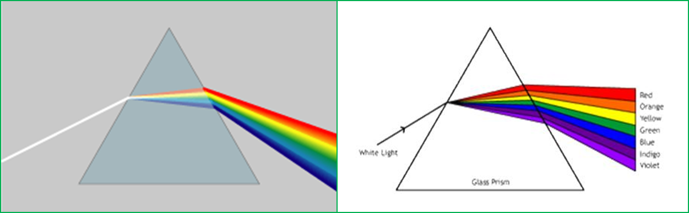
The number of colours that the human eye is able to distinguish in a spectrum is in the order of 100. Accordingly, the Munsell colour system (a 20th-century system for numerically describing colours, based on equal steps for human visual perception) distinguishes 100 hues. The apparent discreteness of main colours is an artefact of human perception and the exact number of main colours is a somewhat arbitrary choice.
Different Rainbow Types
Primary Rainbow
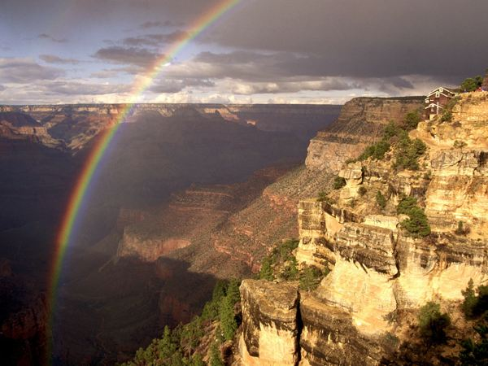
This is the rainbow we are all most familiar with. The primary rainbow is the single multi-colored arc that usually appears after a rainstorm. Primary rainbows are formed when refracted light is reflected through a water droplet. The intensity of the rainbow's colors depends on how large the water droplets are.
Secondary Rainbow (Double rainbows)
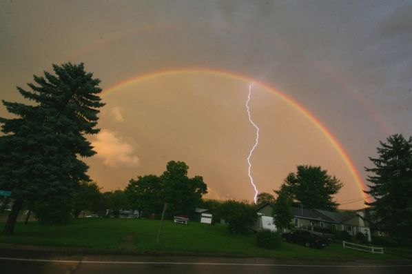
If you have seen a primary rainbow, then chances are you have also seen a secondary rainbow. They are also known as double rainbows. A secondary rainbow forms behind the primary rainbow when the light in the water droplet is reflected twice instead of once. The secondary is about twice as wide as the primary rainbow, but is only one-tenth as intense. Its colors are also reversed.
Supernumerary Rainbows (Stacker rainbows)
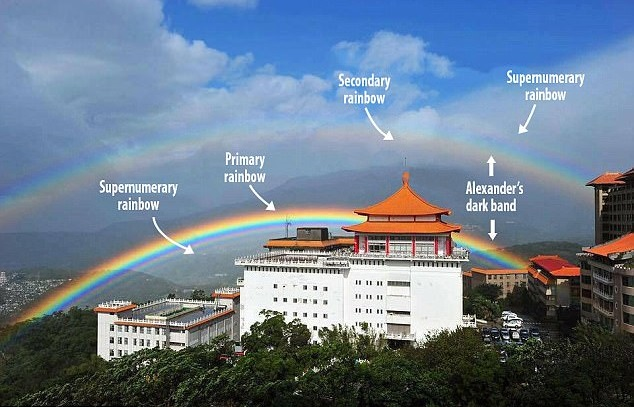
Supernumerary rainbows are also known as stacker rainbows, and occur rather infrequently. They consist of several faint rainbows on the inner side of the primary - and more rarely, they appear outside of the secondary. They are formed by small but similarly sized raindrops, and by the interference of light which reflects once, but travels along a different path inside the raindrop.
Red Rainbows (Monochrome rainbows)
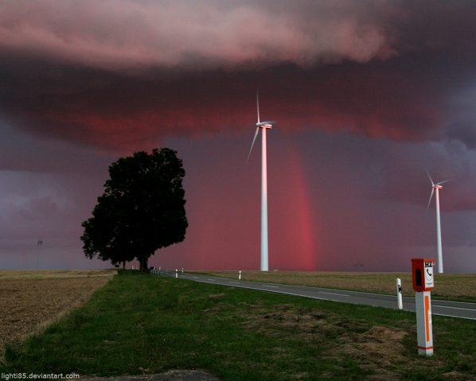
Red rainbows, also called monochrome rainbows, are formed after rainfall during sunrise or sunset. The shorter wavelengths of the spectrum, such as blue and green, are scattered by dust and air molecules. This leaves the remaining light to display the colors with the longest wavelengths, red and yellow, to finally form the red rainbow.
Cloud Rainbows
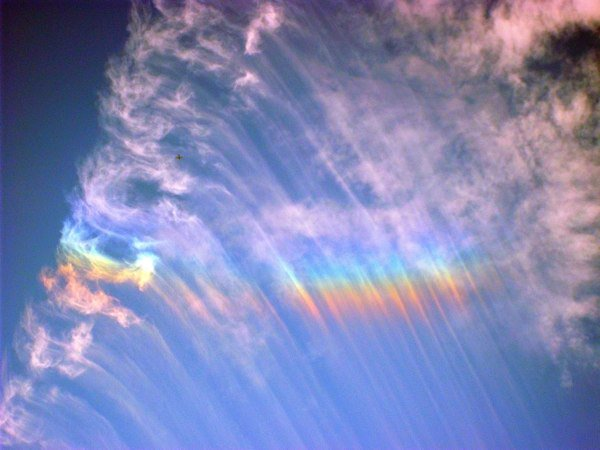
Cloud rainbows form from small water droplets in clouds and damp air, rather than from raindrops. They appear white because the water drops are very small in size (bigger water drops are more able to reflect the spectrum colours). Cloud rainbows are much broader than normal rainbows, and are most likely to form over water. They can also form over land, so long as the fog is thin enough for the sun's rays to shrine through.
Twinned Rainbows
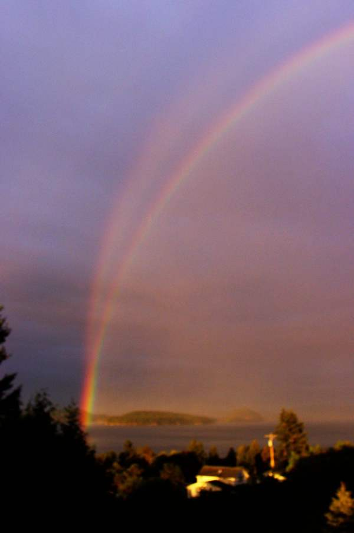
Twinned rainbows are not the same as the double rainbow - they're actually very rare. They're made up of two rainbow arcs that stem from a single base point, and they're caused when a combination of small and large water droplets fall from the sky. The large drops are forced to flatten by air resistance, while the smaller drops are kept in shape by its surface tension. The water droplets then form their own rainbow, which may come together to form twinned rainbows.
Reflected and Reflection Rainbows
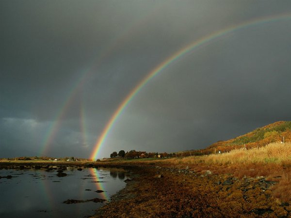
Reflected and reflection rainbows - which are not the same thing, despite their similar names - only form over water. A reflected rainbow is the most commonly seen: it appears when light is deflected off the water droplets and then reflected off the water before we have time to process the light with our eyes.
A reflection rainbow is what appears when light reflects off the water before it is deflected off the water droplets. Reflection rainbows are not nearly as visible as a reflected rainbow, because of the specific conditions they require.
Rainbow Wheels
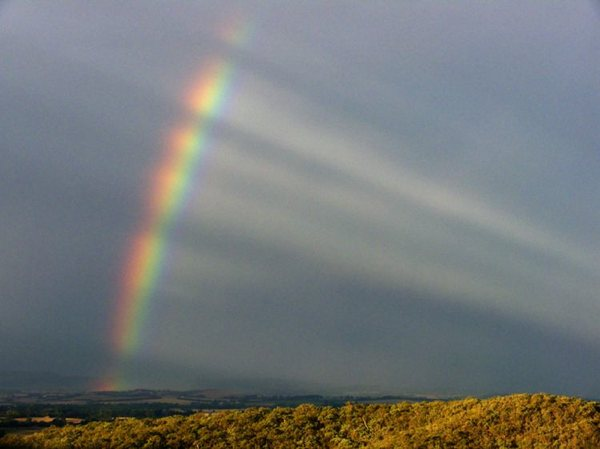
Rainbow wheels are formed when dark clouds or dense rain showers prevent the light from reaching your eye. The shadowed raindrops do not allow you to see the colours of the rainbow. The result is a rainbow that can resemble a wagon wheel, with large spokes centered towards a specific point. If the clouds are moving quickly across the sky, then the rainbow wheel can appear to rotate.
Lunar Rainbows (white rainbow, moon bow)
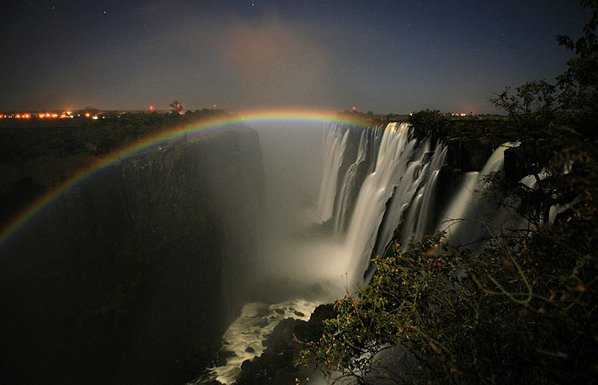
A lunar rainbow is also known with many names like white rainbow or moon bow. Lunar rainbows are rainbows that are formed at night by moonlight. However, moonlight is very weak and lunar rainbows are very rarely seen. The best time to see them, logically, is on the night of a full moon while it's raining. The sky must also be very dark, which means that lunar rainbows appear very dull or white because the colour of the night is not bright enough to activate the cone cells (colour receptors) in our eyes.
Fogbow
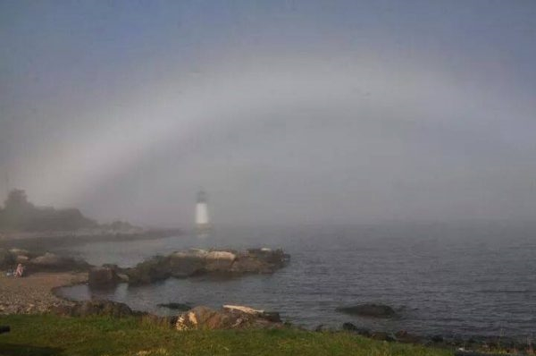
As the name suggests a fogbow is caused due to fog, and not tiny water droplets. This happens when the water drops are extremely tiny, that light cannot pass through them in the same manner as it would in a normal rainbow. The reflection takes place, but does not disperse light adequately in its colors. Instead the colors overlap that gives a white colored band, which is also known as white rainbow. Fogbows will typically appear in cold areas.
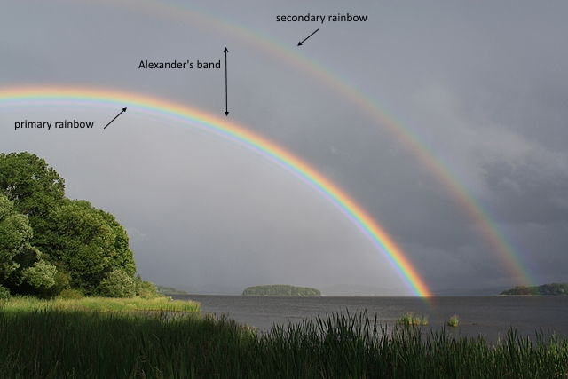
Alexander's Dark Band
Alexander's Band is technically not a rainbow, but it is associated with the primary and secondary rainbows. Named after Alexander of Aphrodisias, who observed it around 200 C.E. is the area of sky between the primary and secondary rainbow and it is noticeably darker than the rest of the sky. The single reflected light of the primary brightens the sky inside and the double reflected light of the secondary brightens the sky outside of it. To our eyes, it appears that the sky is darker between the primary and secondary rainbows.
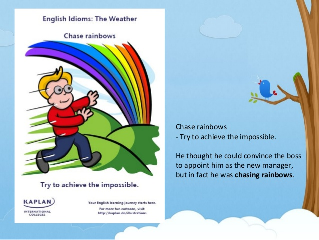
End of the rainbow
Etymology: A reference to the myth that a pot of gold can be found at the end of a rainbow.
Noun: (figuratively) A magical place where one goes to find fulfillment of one's dreams.
Example: Money does not buy happiness. It just can buy the nice things that make life easier and a lot more enjoyable, but it can't get you true happiness - believe that! It's not the end of the rainbow many think it to be.
Chase rainbows
Verb: (idiomatic) To pursue unrealistic or fanciful goals.
Example: The message of the campaign brochure was slick and soothing: "Joseph. He dreams dreams. But he doesn't chase rainbows."